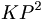

De: La Frikipedia, la enciclopedia extremadamente seria.
De: La Frikipedia, la enciclopedia extremadamente seria. De: La Frikipedia, la enciclopedia extremadamente seria.
| De la serie ciudades del mundo: | |||||
| Almussangeles | |||||
| |||||
| Topónimo oficial | Jozé Vizente | ||||
| País | Espiña | ||||
| Código postal | 110101 | ||||
| Superficie | 2  | ||||
| Altitud | no m'acuerdo | ||||
| Distancia | 3 KP (kilopateos™) | ||||
| Fundación | si | ||||
| Población | seres comunes a la par que raros | ||||
| Gentilicio | Mussangeleros | ||||
| Alcalde | IP anónima | ||||
| | |||||
Almusangeles (en valenciano, Almussangels) es el mayor municipio de la Comunidad Valenciana (Espiña) situado en el este de este sitio, en la comarca del Anillo. Cuenta con -7 habitantes (INE 2069).
En la localidad de Almusangeles se encuentra una de las mayores fábricas de consoladores de Espiña. Además, cuenta con la fabricación exclusiva de Xuspinos™
Situado al suroeste de tu imaginación, justo detras de la colina de los ponis. Su superficie es completamente llana y llena de tierras tungstenosas. El clima es amilceo y los vientos dominantes son los de oeste y este y es este último el que ocasiona las lluvias. Hay que recordar que este viento del este, y no el del oeste, es el que hace que en este sitio llueva.
Desde Valencia, se accede a esta localidad a través de la Via lactea continuando por la carretera de la leche dirección al estomago y desviándose en la salida 532 cogiendo la uretra. También cuenta con estación de ferrocarril de la línea de Lejanías P-2 de Valencia. Teniendo en cuenta que la estación realmente me la he inventado.
El término municipal de Almusangeles limita con las siguientes localidades: japon, smallville, tu casa, y la recta de los folladores.
Fue originalmente del caserío, formado por varios quesitos y un turrón. Existía aquí un puticlub para cobrar los derechos de tránsito de las "mercancías" que entraban y salían.
Durante la segunda mitad del siglo XXX aumentó la población en más de 69 por ciento gracias al puticlub, que tuvo mucho éxito.
| Evolución demográfica de Almusangeles | |||||||||||||||||||
|---|---|---|---|---|---|---|---|---|---|---|---|---|---|---|---|---|---|---|---|
| 1690 | 1692 | 1694 | 1696 | 1698 | 2060 | 2062 | 2069 | 2008 | |||||||||||
| 2 | +69% | 3 | 161 | 6.555 | 666 | 0 | 6.969 | -2 | |||||||||||
La superficie cultivada representa la mayor parte del pueblucho. Los terrenos son en su mayoría de regadío, se cultivan cebollas, pollas, billetes de 2€ ,xuspinos y diversas variedades de polen y marijuana . El riego se realiza con las haguas de las depuradoras fecales ; también se utilizan vómitos , el caudal de la fuente del Tutu, y los de varios pozos inexistentes. Hay ganado vacuno, perdido y patos de goma. Hasta el siglo XXX fue muy importante la cría de hormigas guerreras . Hay industrias de confección de consoladores , alcohol del palo y un puticlube.
Autor(es):